During the project we developed a mobile application, following an adapted co-design process. The application aimed to support, motivate and provide useful tools to Milk Matters donors. The application's design and core functionality were inspired by the first application developed in 2016 by Chelse-Joy Wardle and Mitchell Green. A core requirement of the application was its use of dynamic content - presenting content that is created and updated by Milk Matters.
Donation Tracker
-
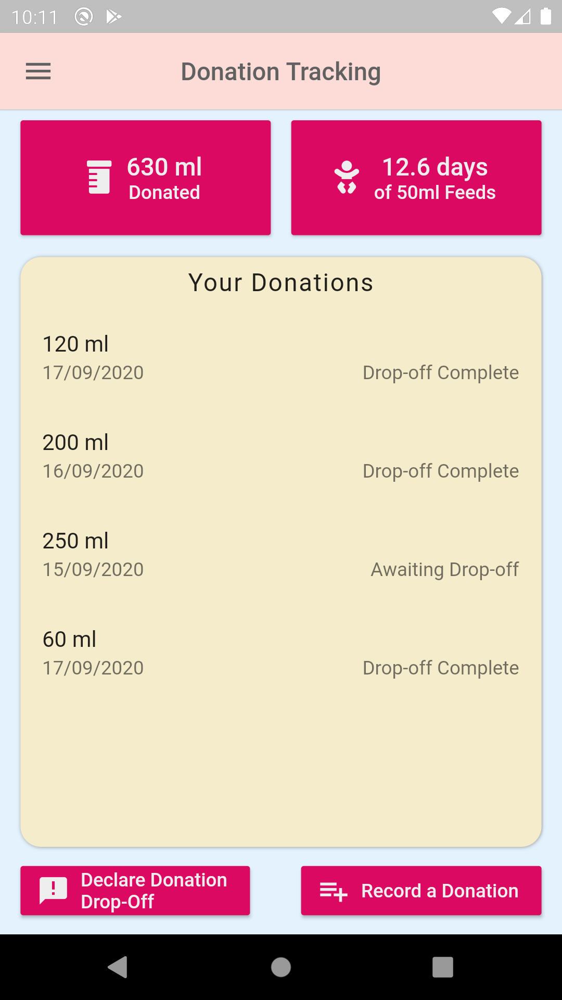
Donors can track their expressed donations using the Donation Tracker, recording the donation date, amount and whether the donation has been dropped off at a depot.
-
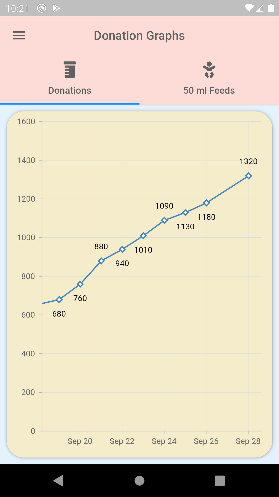
The donation tracker includes graphs of the donor's total donations and the number of 50 ml feeds they've supplied. This allows donors to visualise their impact, aiding motivation and empowerment.
-
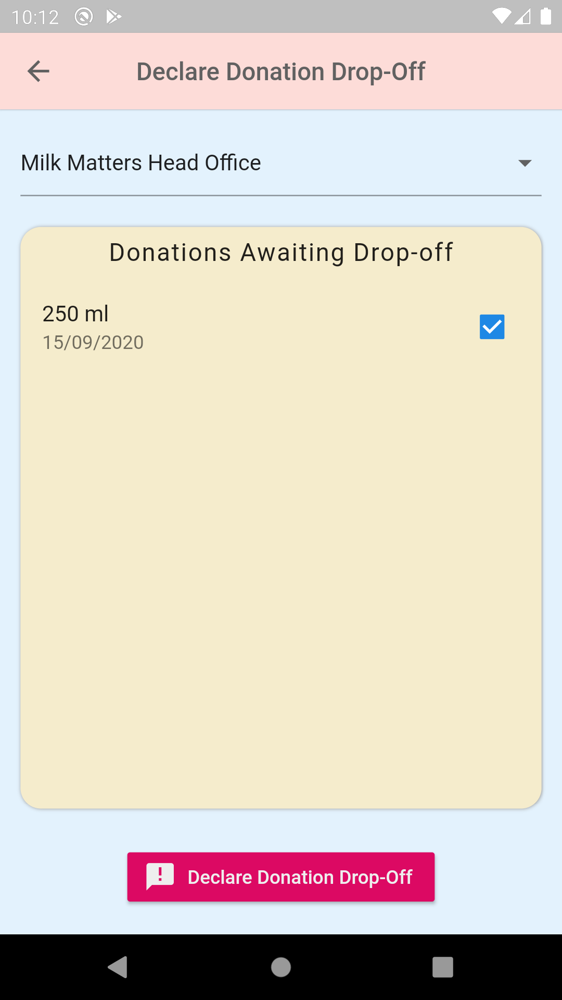
Donors can declare a donation drop-off at a depot. This automatically informs Milk Matters, reducing donor admin overheads and increasing interactivity.
Depot Locator
-
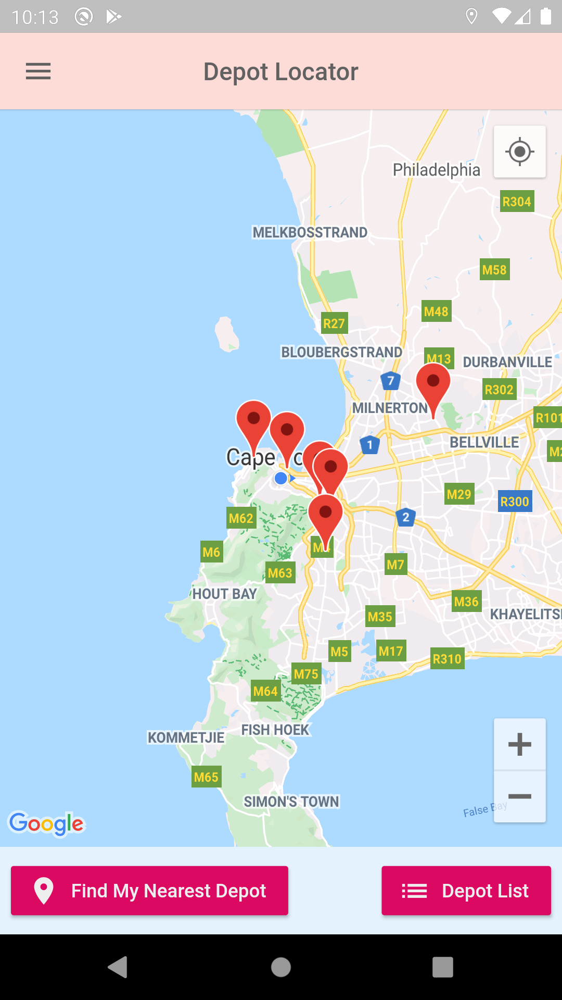
The Depot Locator provides donors with the location of depots, represented by pins on a familiar Google Maps interface.
-
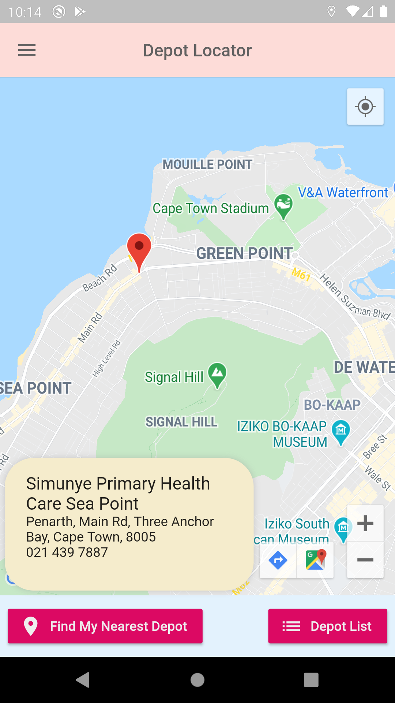
When the pins are pressed, a small pop-up appears displaying the details of the specific depot. Donors can then navigate to the location using their navigation app.
-
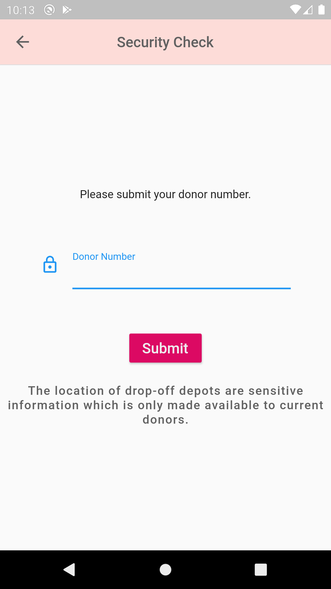
The Depot Locator screen is locked behind a security check, requiring donors to enter their donor numbers before proceeding. This is to restrict access to depot details to current Milk Matters donors.
Educational Resources
-
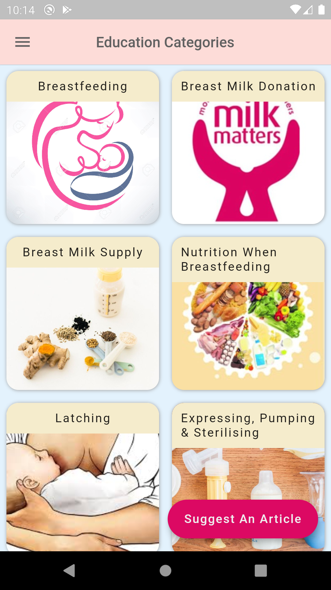
The application provides Milk Matters vetted educational resources in several categories.
-
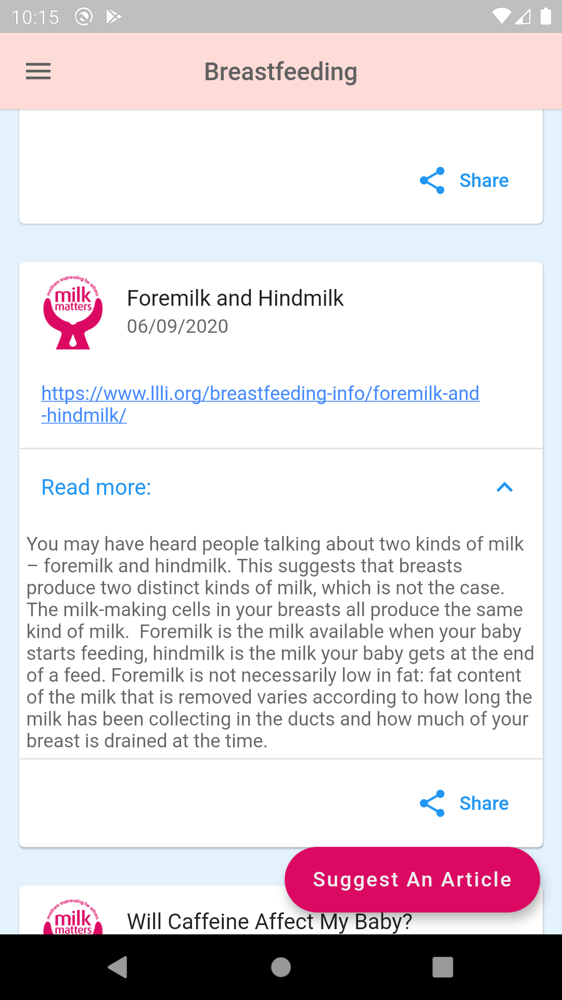
Each education category contains several articles, containging the source URL and a simple description. Articles can be shared from the device to several platforms.
-
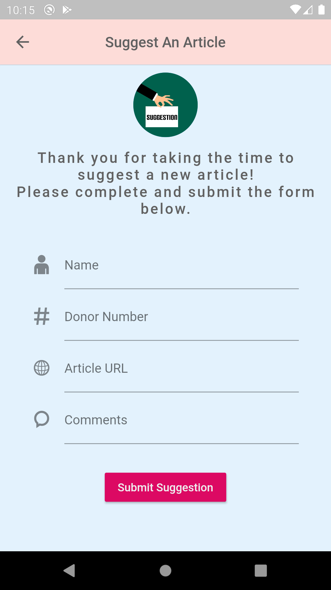
Users can suggest an article that they feel could be useful for others. Milk Matters can then choose to add it to the application's educational resources.
-
Frequently Asked Questions
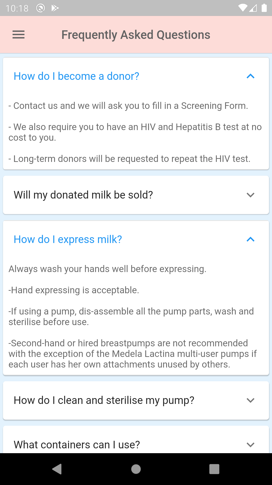The application contains a list of frequently asked questions and their answers relevant to both donors and non-donors.
-
Donor Prescreening Questions
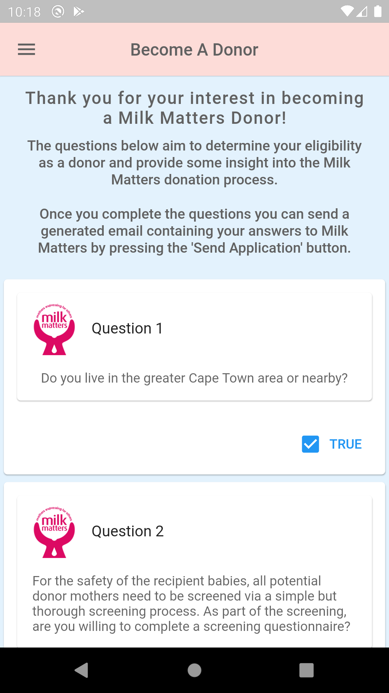Prospective donors can complete a prescreening questionnaire. Once completed, they can submit it to Milk Matters to potentially begin their donation journey.
-
News & Events Feed
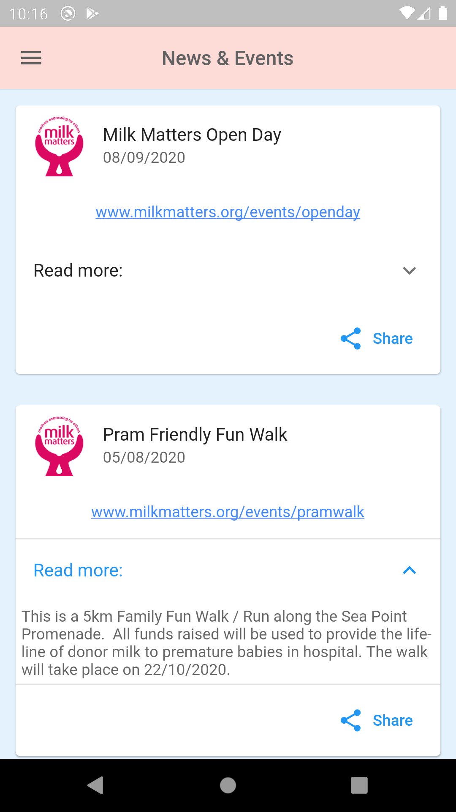Users can keep up to date with Milk Matters news using the news and events feed. It also details any upcoming Milk Matters events. Its content supports sharing as well.